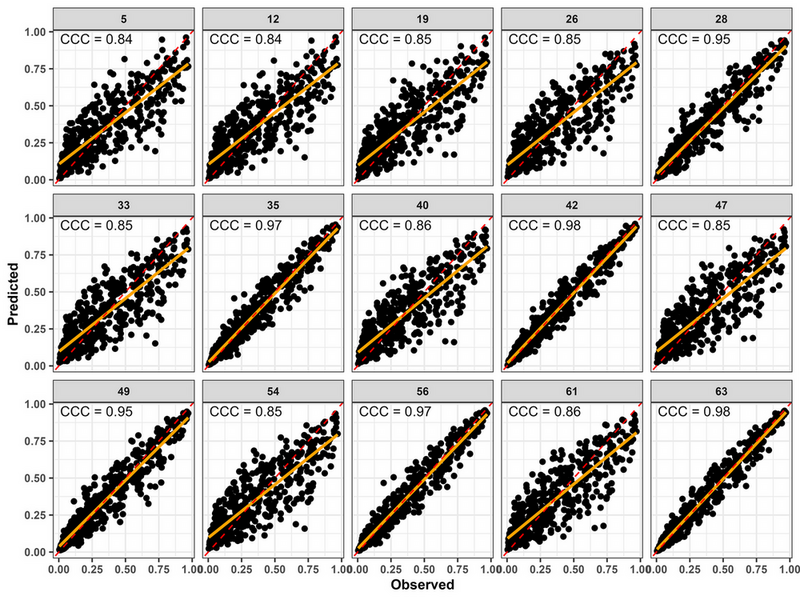
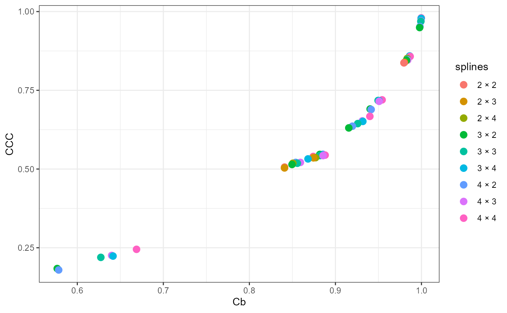
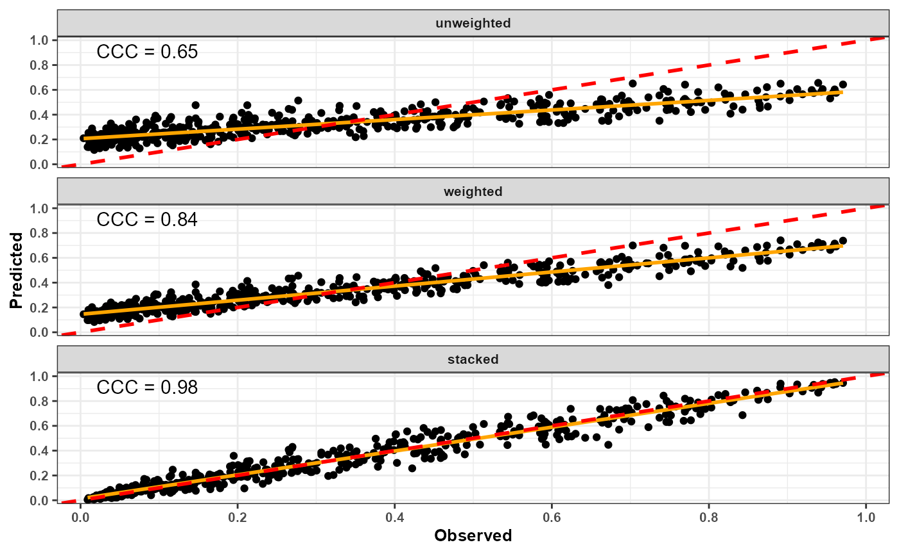
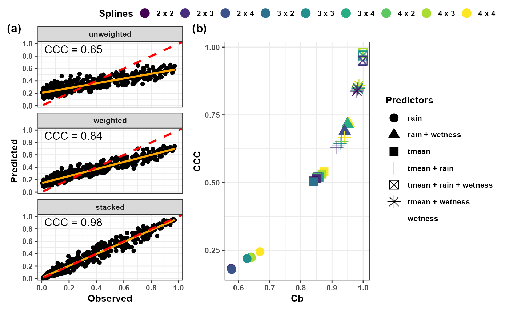
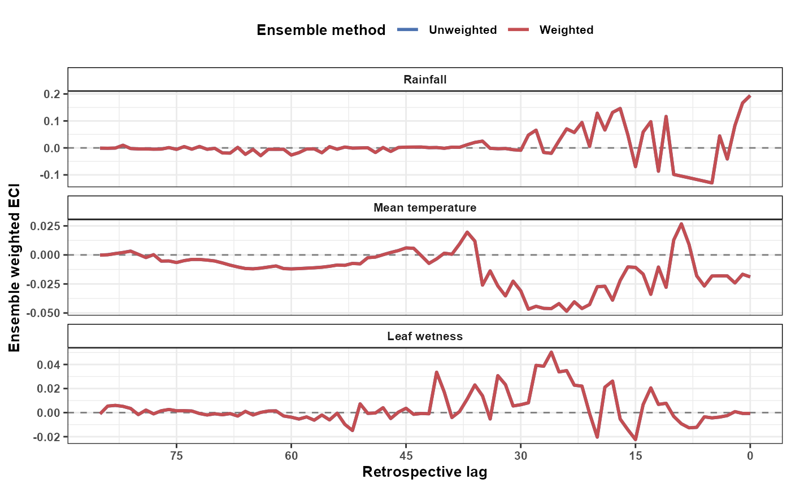
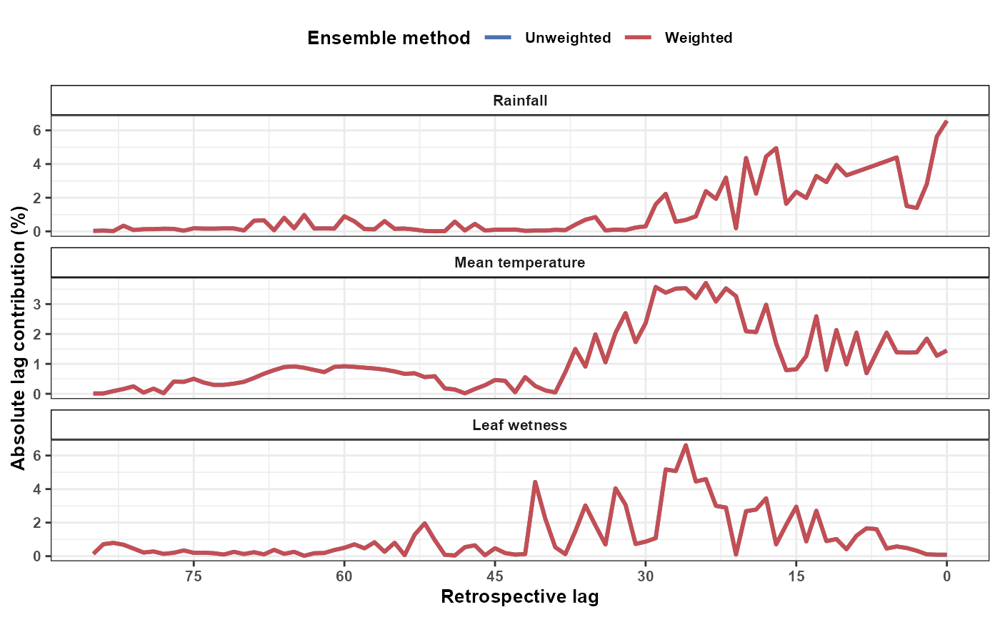

Model Selection and Ensemble Forecasting
Ricardo G. Tomáz
Source:vignettes/selection-ensemble.Rmd
selection-ensemble.RmdIntroduction
Distributed Lag Non-linear Models (DLNMs) require several modeling decisions, including:
- exposure variables;
- lag duration;
- exposure spline complexity;
- lag spline complexity;
- regression engine.
Different specifications may lead to different predictive performance.
EpiExposure provides tools for systematically exploring
model configurations, ranking competing models, and combining
predictions through ensemble forecasting.
This section demonstrates:
- automated DLNM model search;
- predictive validation;
- model ranking;
- ensemble forecasting;
- comparison of ensemble strategies.
Load example data
data("epi_data")
head(epi_data, 10L )
#> # A tibble: 10 × 6
#> epi_id time tmean rain wetness y
#> <dbl> <dbl> <dbl> <dbl> <dbl> <dbl>
#> 1 1 0 22.0 0 8.83 0.330
#> 2 1 1 21.5 0 11.9 0.330
#> 3 1 2 21.5 5.38 12.5 0.330
#> 4 1 3 21.8 14.6 12.3 0.330
#> 5 1 4 20.8 0 11.4 0.330
#> 6 1 5 23.0 8.24 7.98 0.330
#> 7 1 6 23.9 4.69 10.8 0.330
#> 8 1 7 23.1 12.3 8.58 0.330
#> 9 1 8 25.3 4.14 10.6 0.330
#> 10 1 9 26.0 1.91 14.1 0.330Why model selection matters
Exposure-lag-response relationships are highly sensitive to model specification.
For example, increasing lag flexibility may improve fit but increase overfitting.
Likewise, adding additional predictors may improve prediction in some pathosystems while reducing generalizability in others.
EpiExposure can evaluate predefined combinations of
candidate DLNM specifications using a consistent fitting and validation
workflow.
Searching candidate models
library(future)
future::plan(
future::multisession,
workers = 4
)The appropriate number of workers depends on the available hardware and local computing policies. Users should avoid requesting more workers than their system can support.
future::plan(future::sequential ) Run the model search
best_models <- find_bestfit(
data = epi_data,
response = "y",
group = "epi_id",
time = "time",
vars = c("tmean","rain","wetness"),
max_lag = 85,
df_var_grid = c(2,3,4),
df_lag_grid = c(2,3,4),
model_engine = "glmmTMB",
family = "beta",
keep_fits = TRUE)
plot_performance(
object = best_models,
model_id = c(5,12,19,26,28,33,35,40,42,47,49,54,56,61,63),
metrics = c("CCC"),
x = "observed",
y = "predicted",
scale_factor = 1,
ncol = 5,
x_lab = "Observed ",
y_lab = "Predicted",
size = 1.4
) +
ggplot2::theme(
text = ggplot2::element_text(
size = 10,
face = "bold"
)
)
Inspect results
| rank | model_id | df_var | df_lag | vars | n_vars | CCC | Cb | rho | RMSE | MAE | n_folds | n_success_folds | n_failed_folds | n_predictions | n_success | n_failed | n_warning_folds | warning_rate | n_warning_events | n_knot_warning_folds | n_convergence_warning_folds | n_hessian_warning_folds | n_other_warning_folds | n_knot_warning_events | n_convergence_warning_events | n_hessian_warning_events | n_other_warning_events |
|---|---|---|---|---|---|---|---|---|---|---|---|---|---|---|---|---|---|---|---|---|---|---|---|---|---|---|---|
| 1 | 63 | 4 | 4 | tmean + rain + wetness | 3 | 0.9800 | 0.9997 | 0.9802 | 0.0529 | 0.0382 | 520 | 520 | 0 | 520 | 520 | 0 | 520 | 1 | 1010 | 520 | 490 | 0 | 0 | 520 | 490 | 0 | 0 |
| 2 | 42 | 3 | 4 | tmean + rain + wetness | 3 | 0.9783 | 0.9996 | 0.9786 | 0.0550 | 0.0395 | 520 | 520 | 0 | 520 | 520 | 0 | 520 | 1 | 523 | 520 | 3 | 0 | 0 | 520 | 3 | 0 | 0 |
| 3 | 56 | 4 | 3 | tmean + rain + wetness | 3 | 0.9702 | 0.9994 | 0.9708 | 0.0642 | 0.0475 | 520 | 520 | 0 | 520 | 520 | 0 | 520 | 1 | 530 | 520 | 10 | 0 | 0 | 520 | 10 | 0 | 0 |
| 4 | 35 | 3 | 3 | tmean + rain + wetness | 3 | 0.9688 | 0.9993 | 0.9695 | 0.0656 | 0.0483 | 520 | 520 | 0 | 520 | 520 | 0 | 520 | 1 | 520 | 520 | 0 | 0 | 0 | 520 | 0 | 0 | 0 |
| 5 | 49 | 4 | 2 | tmean + rain + wetness | 3 | 0.9523 | 0.9982 | 0.9540 | 0.0803 | 0.0577 | 520 | 520 | 0 | 520 | 520 | 0 | 520 | 1 | 520 | 520 | 0 | 0 | 0 | 520 | 0 | 0 | 0 |
| 6 | 28 | 3 | 2 | tmean + rain + wetness | 3 | 0.9493 | 0.9979 | 0.9513 | 0.0825 | 0.0589 | 520 | 520 | 0 | 520 | 520 | 0 | 520 | 1 | 520 | 520 | 0 | 0 | 0 | 520 | 0 | 0 | 0 |
| 7 | 40 | 3 | 4 | tmean + wetness | 2 | 0.8590 | 0.9863 | 0.8710 | 0.1316 | 0.0988 | 520 | 520 | 0 | 520 | 520 | 0 | 0 | 0 | 0 | 0 | 0 | 0 | 0 | 0 | 0 | 0 | 0 |
| 8 | 61 | 4 | 4 | tmean + wetness | 2 | 0.8575 | 0.9869 | 0.8689 | 0.1325 | 0.0998 | 520 | 520 | 0 | 520 | 520 | 0 | 0 | 0 | 0 | 0 | 0 | 0 | 0 | 0 | 0 | 0 | 0 |
| 9 | 19 | 2 | 4 | tmean + wetness | 2 | 0.8511 | 0.9834 | 0.8655 | 0.1343 | 0.1016 | 520 | 520 | 0 | 520 | 520 | 0 | 0 | 0 | 0 | 0 | 0 | 0 | 0 | 0 | 0 | 0 | 0 |
| 10 | 47 | 4 | 2 | tmean + wetness | 2 | 0.8482 | 0.9837 | 0.8623 | 0.1357 | 0.1035 | 520 | 520 | 0 | 520 | 520 | 0 | 0 | 0 | 0 | 0 | 0 | 0 | 0 | 0 | 0 | 0 | 0 |
Depending on the selected validation settings, the resulting object can include:
- a model identifier;
- the fitted predictor combination;
- exposure and lag spline settings;
- the modeling engine and response family;
- the Concordance Correlation Coefficient;
- the Root Mean Square Error;
- the Mean Absolute Error;
- bias-related metrics;
- the fitted model object when
keep_fits = TRUE.
Ranking models
Top-performing models
The following example ranks models by decreasing CCC. This is one possible ranking criterion, not a universal rule. Candidate models should also be examined using error metrics, bias, convergence diagnostics, model complexity, and the scientific plausibility of the exposure-lag structure.
best_models %>%
arrange(desc(CCC)) %>%
select(
model_id,
vars,
CCC,
RMSE,
MAE
) %>%
head(10)
#> # A tibble: 10 × 5
#> model_id vars CCC RMSE MAE
#> <dbl> <chr> <dbl> <dbl> <dbl>
#> 1 63 tmean + rain + wetness 0.980 0.0529 0.0382
#> 2 42 tmean + rain + wetness 0.978 0.0550 0.0395
#> 3 56 tmean + rain + wetness 0.970 0.0642 0.0475
#> 4 35 tmean + rain + wetness 0.969 0.0656 0.0483
#> 5 49 tmean + rain + wetness 0.952 0.0803 0.0577
#> 6 28 tmean + rain + wetness 0.949 0.0825 0.0589
#> 7 40 tmean + wetness 0.859 0.132 0.0988
#> 8 61 tmean + wetness 0.858 0.132 0.0998
#> 9 19 tmean + wetness 0.851 0.134 0.102
#> 10 47 tmean + wetness 0.848 0.136 0.104Visualizing model performance
best_models %>%
mutate(
splines = paste(
df_var,
df_lag,
sep = " × "
)
) %>%
ggplot(
aes(
Cb,
CCC,
color = splines
)
) +
geom_point(size = 3) +
theme_bw()
Understanding validation metrics
Concordance Correlation Coefficient
CCC evaluates agreement between observed and predicted outcomes by combining precision and accuracy.
Values closer to 1 indicate stronger concordance. However, CCC should be interpreted together with error and bias metrics rather than used as the only selection criterion.
Why use ensembles?
No single model is guaranteed to be optimal.
Different DLNM structures frequently capture different aspects of the underlying epidemiological process.
Combining predictions from multiple models often improves stability and predictive robustness.
Selecting ensemble candidates
The identifiers below are illustrative. Replace them with model
identifiers selected from the user’s own best_models
object.
candidate_models <- c(
63,
23,
44
)Therefore, three candidate models (best ranked [63], and the two lower-ranked models [23, 44]) were selected to be used on the ensemble approaches, with CCC used as the performance metric for the weighted ensemble.
Unweighted ensemble
ens_unweighted <- ensemble_bestfit(
bestfit = best_models,
ensemble_scope = "model",
method = "unweighted",
model_id = candidate_models)Inspect results
The ensemble summary can be extracted from the fitted ensemble object:
ens_unweighted$ensemble_summary| method | n_models | n_oof | family | outcome_type | cv_method | cv_scheme | k | weight_metric | metric_direction | threshold | stacking_model | stack_objective | stack_intercept | weight_transform | CCC | Cb | rho | RMSE | MAE |
|---|---|---|---|---|---|---|---|---|---|---|---|---|---|---|---|---|---|---|---|
| unweighted | 3 | 520 | beta | non_binary | LOOCV | leave_one_group_out | 520 | CCC | maximize | NA | NA | NA | NA | NA | 0.6455 | 0.739 | 0.8735 | 0.1741 | 0.1476 |
Weighted ensemble
ens_weighted <- ensemble_bestfit(
bestfit = best_models,
ensemble_scope = "model",
method = "weighted",
model_id = candidate_models,
weight_metric = "CCC",
weight_transform = "rank_inverse"
)Inspect results
The ensemble summary can be extracted from the fitted ensemble object:
ens_weighted$ensemble_summary| method | n_models | n_oof | family | outcome_type | cv_method | cv_scheme | k | weight_metric | metric_direction | threshold | stacking_model | stack_objective | stack_intercept | weight_transform | CCC | Cb | rho | RMSE | MAE |
|---|---|---|---|---|---|---|---|---|---|---|---|---|---|---|---|---|---|---|---|
| weighted | 3 | 520 | beta | non_binary | LOOCV | leave_one_group_out | 520 | CCC | maximize | NA | NA | NA | NA | rank_inverse | 0.8386 | 0.8788 | 0.9542 | 0.125 | 0.1053 |
Stacked ensemble
ens_stacked <- ensemble_bestfit(
bestfit = best_models,
ensemble_scope = "model",
method = "stacked",
model_id = candidate_models,
stacking_model = "ridge",
stack_objective = "regularized"
)Inspect results
The ensemble summary can be extracted from the fitted ensemble object:
ens_stacked$ensemble_summary| method | n_models | n_oof | family | outcome_type | cv_method | cv_scheme | k | weight_metric | metric_direction | threshold | stacking_model | stack_objective | stack_intercept | weight_transform | CCC | Cb | rho | RMSE | MAE |
|---|---|---|---|---|---|---|---|---|---|---|---|---|---|---|---|---|---|---|---|
| stacked | 3 | 520 | beta | non_binary | LOOCV | leave_one_group_out | 520 | CCC | maximize | NA | ridge | regularized | -0.004 | NA | 0.9798 | 0.9998 | 0.98 | 0.0532 | 0.0385 |
Comparing ensemble strategies
ensemble_metrics <- dplyr::bind_rows(
Unweighted = ens_unweighted$ensemble_summary,
Weighted = ens_weighted$ensemble_summary,
Stacked = ens_stacked$ensemble_summary,
.id = "method"
) |>
dplyr::select(
method,
CCC,
RMSE,
MAE
)
ensemble_metrics
#> # A tibble: 3 × 4
#> method CCC RMSE MAE
#> <chr> <dbl> <dbl> <dbl>
#> 1 Unweighted 0.646 0.174 0.148
#> 2 Weighted 0.839 0.125 0.105
#> 3 Stacked 0.980 0.0532 0.0385Visualizing ensemble predictions
ens_unweighted$ensemble_predictions$method = "unweighted"
ens_weighted$ensemble_predictions$method = "weighted"
ens_stacked$ensemble_predictions$method = "stacked"
ensemble_all = rbind(ens_unweighted$ensemble_predictions,ens_weighted$ensemble_predictions, ens_stacked$ensemble_predictions)| group | fold | method | observed | predicted_ensemble | model_63 | model_23 | model_44 |
|---|---|---|---|---|---|---|---|
| 1 | 1 | unweighted | 0.3299 | 0.4712 | 0.3653 | 0.5205 | 0.5277 |
| 2 | 2 | unweighted | 0.0706 | 0.3607 | 0.0776 | 0.4947 | 0.5098 |
| 3 | 3 | unweighted | 0.1900 | 0.2310 | 0.1939 | 0.2508 | 0.2483 |
| 4 | 4 | unweighted | 0.0356 | 0.2738 | 0.0477 | 0.3806 | 0.3931 |
| 5 | 5 | unweighted | 0.1173 | 0.2811 | 0.1206 | 0.3630 | 0.3597 |
| 6 | 6 | unweighted | 0.1262 | 0.3007 | 0.1403 | 0.3811 | 0.3808 |
| 7 | 7 | unweighted | 0.2764 | 0.2737 | 0.2366 | 0.2919 | 0.2926 |
| 8 | 8 | unweighted | 0.3777 | 0.3836 | 0.4355 | 0.3595 | 0.3559 |
| 9 | 9 | unweighted | 0.0250 | 0.1886 | 0.0228 | 0.2711 | 0.2718 |
| 10 | 10 | unweighted | 0.8908 | 0.5461 | 0.9030 | 0.3732 | 0.3620 |
ensemble_metrics$method = c("unweighted","weighted","stacked")
ordem_methods <- c(
"unweighted",
"weighted",
"stacked"
)
ensemble_plot <- ensemble_all %>%
filter(!is.na(method)) %>%
mutate(
method = as.character(method)
) %>%
filter(method %in% ordem_methods) %>%
mutate(
method = factor(
method,
levels = ordem_methods
)
)
CCC_plot <- ensemble_metrics %>%
mutate(
method = factor(
method,
levels = ordem_methods
)
)
pos_CCC <- ensemble_plot %>%
group_by(method) %>%
summarise(
x = min(observed, na.rm = TRUE) +
0.05 * diff(range(observed, na.rm = TRUE)),
y = max(predicted_ensemble, na.rm = TRUE) -
0.05 * diff(range(predicted_ensemble, na.rm = TRUE)),
.groups = "drop"
) %>%
left_join(
CCC_plot %>% select(method, CCC),
by = "method"
)
ensemble_gg = ggplot(ensemble_plot,
aes(observed, predicted_ensemble)) +
geom_point()+
geom_smooth(method = "lm",se = FALSE, color = "orange") +
geom_abline(
intercept = 0,
slope = 1,
color = "red",
linetype = "dashed",
linewidth = 1) +
geom_text(
data = pos_CCC,
aes(
x = 0.02,
y = 0.97,
label = sprintf("CCC = %.2f", CCC)
),
inherit.aes = FALSE,
hjust = 0,
vjust = 1,
size = 4) +
facet_wrap(
~method,
ncol = 1) +
theme_bw() +
scale_x_continuous(
limits = c(0, 1),
breaks = seq(0, 1, 0.20),
expand = expansion(mult = 0.03)
) +
scale_y_continuous(
limits = c(0, 1),
breaks = seq(0, 1, 0.20),
expand = expansion(mult = 0.03)
) +
labs(
x = "Observed",
y = "Predicted") +
theme(text = element_text(size = 10,face = "bold"),legend.position = "none")
ensemble_gg
best_models_plot <- best_models %>%
mutate(
splines = paste(df_lag, df_var, sep = " x ")
)
best_plot <- best_models_plot %>%
ggplot(aes(
Cb, CCC,
color = as.factor(splines),
shape = as.factor(vars)
)) +
geom_point(size = 4) +
scale_color_viridis_d() +
labs(
x = "Cb",
y = "CCC",
color = "Splines",
shape = "Predictors"
) +
guides(
color = guide_legend(
position = "top",
nrow = 1,
byrow = TRUE,
title.position = "left",
theme = theme(
legend.key.height = unit(0.25, "cm"),
legend.key.width = unit(0.45, "cm"),
legend.spacing.y = unit(0, "cm"),
legend.margin = margin(
t = -3,
r = 0,
b = -3,
l = 0
)
)
),
shape = guide_legend(
position = "right"
)
) +
theme_bw() +
theme(
text = element_text(
size = 10,
face = "bold"
)
)
final_plot <- ensemble_gg + best_plot +
plot_layout(ncol = 2) +
plot_annotation(
tag_levels = "a",
tag_prefix = "(",
tag_suffix = ")"
) &
theme(
plot.tag = element_text(
size = 12,
face = "bold"
),
plot.tag.position = c(0.02, 0.94)
)
final_plot
Choosing a model-level ensemble strategy
Each ensemble method has advantages.
Unweighted ensemble
- gives equal contribution to the selected models;
- is simple and transparent;
- avoids estimating additional model weights;
- can be affected by weak or redundant candidate models.
Weighted ensemble
- assigns different contributions to candidate models;
- can emphasize models with stronger validation performance;
- depends on the selected metric and weight transformation;
- does not guarantee improvement over the best individual model.
Stacked ensemble
- estimates combination coefficients from model predictions;
- can account for complementary predictive information;
- requires careful separation between weight estimation and final evaluation;
- can overfit when the validation sample is limited or when candidate predictions are highly similar.
Therefore, no ensemble method is universally superior.
An unweighted ensemble is useful as a transparent reference because every candidate contributes equally.
A weighted ensemble is appropriate when the selected validation metric provides a defensible basis for assigning model contributions.
A stacked ensemble can be useful when candidate models contain complementary predictive information and the stacking weights are estimated without using the same observations reserved for final evaluation.
Regardless of the method, compare the ensemble against:
- the strongest individual candidate;
- a simple baseline model;
- alternative ensemble strategies;
- results on validation data not reused for weight estimation.
The previous sections focused on model-level ensembles, which combine out-of-fold predictions and evaluate their predictive performance.
EpiExposure can also construct lag-contribution
ensembles. Instead of combining predicted outcomes, these ensembles
combine the lag-specific ECI decompositions obtained from selected
full-data model refits.
Lag-contribution ensembles
Why construct a lag ensemble?
Model-level ensembles combine predictions from multiple candidate models. However, models may also differ in how they distribute the contribution of an exposure across the fitted lag interval.
A lag ensemble combines the lag-specific epidemiological contribution indices obtained from the selected models. For lag , the ensemble contribution is defined as:
where is the lag-specific weighted ECI from model , and is the model weight derived from out-of-fold model performance.
The model weights therefore come from cross-validation, whereas the lag-specific ECI values are calculated from the selected models refitted to the complete dataset.
Lag ensembles require retained full-data fits or precomputed
lag data. For automatic lag decomposition,
best_models must be the complete object returned by
find_bestfit() and must contain the retained fitted models
in attr(best_models, "fits"). An Excel or CSV export of the
ranking table does not preserve the attributes, fitted models, or basis
metadata required for this calculation.
The fitted models are not used to recalculate the cross-validation
metrics. The model ranking and ensemble weights remain based on the
out-of-fold predictions produced by find_bestfit(). The
retained full-data fits are used only to obtain the final lag-specific
decompositions for the selected models.
Constructing unweighted and weighted lag ensembles
The following example selects the three highest-ranked models and constructs two lag ensembles:
-
"unweighted"gives equal weight to each selected model; -
"weighted"derives model weights from the selected performance metric.
To keep the example computationally efficient, the lag ensemble is
demonstrated using one complete epidemic history. Users may instead
supply all available epidemic histories, provided that each history
contains the complete max_lag + 1 observations required by
the fitted models. The computational cost will increase with the number
of epidemics, exposures, selected models, and lags. The results shown
here are therefore specific to Epidemic 1.
epi_data1 = epi_data |>
filter(epi_id == 1)
lag_ensemble <- ensemble_bestfit(
bestfit = best_models,
data = epi_data1,
group = "epi_id",
var = c(
"tmean",
"rain",
"wetness"
),
ensemble_scope = "lag",
method = c(
"unweighted",
"weighted"
),
top_n = 3,
weight_metric = NULL,
weight_transform = "softmax",
lag_group_cols = c(
"epi_id",
"var",
"lag"
),
lg_strategy = "requested_available",
rl_weights = TRUE,
compute_ecilag_args = list(
uncertainty = FALSE
),
verbose = TRUE
)When weight_metric = NULL,
ensemble_bestfit() uses the ranking metric stored by
find_bestfit(). The direction of that metric is handled
automatically: metrics such as CCC are maximized, whereas metrics such
as RMSE are minimized.
The argument:
lg_strategy = "requested_available"uses each requested exposure when that exposure is available in the selected model. Because candidate models may contain different combinations of exposures, not every model necessarily contributes to every exposure-specific lag ensemble.
With:
rl_weights = TRUEthe model weights are renormalized among the models available for each exposure-lag unit. This ensures that the available model weights sum to one within each lag-specific ensemble calculation.
Inspecting selected models and weights
The selected candidate models can be inspected directly:
lag_ensemble$selected_models| rank | model_id | df_var | df_lag | vars | n_vars | CCC | Cb | rho | RMSE | MAE | n_folds | n_success_folds | n_failed_folds | n_predictions | n_success | n_failed | n_warning_folds | warning_rate | n_warning_events | n_knot_warning_folds | n_convergence_warning_folds | n_hessian_warning_folds | n_other_warning_folds | n_knot_warning_events | n_convergence_warning_events | n_hessian_warning_events | n_other_warning_events |
|---|---|---|---|---|---|---|---|---|---|---|---|---|---|---|---|---|---|---|---|---|---|---|---|---|---|---|---|
| 1 | 63 | 4 | 4 | tmean + rain + wetness | 3 | 0.9800 | 0.9997 | 0.9802 | 0.0529 | 0.0382 | 520 | 520 | 0 | 520 | 520 | 0 | 520 | 1 | 1010 | 520 | 490 | 0 | 0 | 520 | 490 | 0 | 0 |
| 2 | 42 | 3 | 4 | tmean + rain + wetness | 3 | 0.9783 | 0.9996 | 0.9786 | 0.0550 | 0.0395 | 520 | 520 | 0 | 520 | 520 | 0 | 520 | 1 | 523 | 520 | 3 | 0 | 0 | 520 | 3 | 0 | 0 |
| 3 | 56 | 4 | 3 | tmean + rain + wetness | 3 | 0.9702 | 0.9994 | 0.9708 | 0.0642 | 0.0475 | 520 | 520 | 0 | 520 | 520 | 0 | 520 | 1 | 530 | 520 | 10 | 0 | 0 | 520 | 10 | 0 | 0 |
The model weights used by each ensemble method are stored separately:
lag_ensemble$model_weights| method | model_id | metric_value | prediction_weight | lag_weight |
|---|---|---|---|---|
| unweighted | 63 | 0.9800 | NA | 0.3333 |
| unweighted | 42 | 0.9783 | NA | 0.3333 |
| unweighted | 56 | 0.9702 | NA | 0.3333 |
| weighted | 63 | 0.9800 | NA | 0.3346 |
| weighted | 42 | 0.9783 | NA | 0.3340 |
| weighted | 56 | 0.9702 | NA | 0.3314 |
For the unweighted ensemble, the selected models receive equal lag weights. For the weighted ensemble, the weights are derived from the selected cross-validation performance metric.
These weights describe the relative influence of the selected models in the lag ensemble. They are not lag-specific DLNM coefficients.
Inspecting ensemble lag contributions
The combined lag-specific contributions are returned in:
lag_ensemble$ensemble_by_lagInspect the first rows:
| epi_id | var | lag | method | ECI_weighted_ens | n_models | n_selected_models | raw_model_weight_sum | weights_renormalized | models_used | ECI_percent_ens |
|---|---|---|---|---|---|---|---|---|---|---|
| 1 | tmean | 0 | unweighted | -0.0189 | 3 | 3 | 1 | TRUE | 42, 56, 63 | 1.4481 |
| 1 | tmean | 1 | unweighted | -0.0167 | 3 | 3 | 1 | TRUE | 42, 56, 63 | 1.2743 |
| 1 | tmean | 2 | unweighted | -0.0242 | 3 | 3 | 1 | TRUE | 42, 56, 63 | 1.8470 |
| 1 | tmean | 3 | unweighted | -0.0181 | 3 | 3 | 1 | TRUE | 42, 56, 63 | 1.3854 |
| 1 | tmean | 4 | unweighted | -0.0180 | 3 | 3 | 1 | TRUE | 42, 56, 63 | 1.3787 |
| 1 | tmean | 5 | unweighted | -0.0182 | 3 | 3 | 1 | TRUE | 42, 56, 63 | 1.3889 |
| 1 | tmean | 6 | unweighted | -0.0268 | 3 | 3 | 1 | TRUE | 42, 56, 63 | 2.0472 |
| 1 | tmean | 7 | unweighted | -0.0180 | 3 | 3 | 1 | TRUE | 42, 56, 63 | 1.3757 |
| 1 | tmean | 8 | unweighted | 0.0090 | 3 | 3 | 1 | TRUE | 42, 56, 63 | 0.6871 |
| 1 | tmean | 9 | unweighted | 0.0268 | 3 | 3 | 1 | TRUE | 42, 56, 63 | 2.0466 |
| 1 | tmean | 10 | unweighted | 0.0129 | 3 | 3 | 1 | TRUE | 42, 56, 63 | 0.9838 |
| 1 | tmean | 11 | unweighted | -0.0279 | 3 | 3 | 1 | TRUE | 42, 56, 63 | 2.1334 |
The principal output columns are:
-
var: exposure variable; -
lag: retrospective lag, where lag 0 is the most recent exposure; -
method: ensemble method; -
ECI_weighted_ens: signed ensemble ECI contribution at that lag; -
ECI_percent_ens: absolute percentage contribution of that lag within the corresponding exposure and ensemble method; -
n_models: number of models contributing to that lag unit; -
raw_model_weight_sum: total original model-weight mass available for that lag unit; -
weights_renormalized: whether weights were renormalized among the available models; -
models_used: selected models contributing to the lag unit.
The signed value ECI_weighted_ens preserves the
direction of the ensemble contribution. In contrast,
ECI_percent_ens is based on the absolute contribution
magnitude and describes how the total lag contribution is distributed
across the fitted lag interval.
Visualizing signed lag contributions
ensemble_by_lag = lag_ensemble$ensemble_by_lag
lag_ensemble_signed_plot <- ggplot(
ensemble_by_lag,
aes(
x = lag,
y = ECI_weighted_ens,
color = method
)
) +
geom_hline(
yintercept = 0,
color = "grey50",
linetype = "dashed",
linewidth = 0.5
) +
geom_line(
linewidth = 1
) +
facet_wrap(
vars(var),
ncol = 1,
scales = "free_y",
labeller = as_labeller(
c(
tmean = "Mean temperature",
rain = "Rainfall",
wetness = "Leaf wetness"
)
)
) +
scale_x_reverse(
breaks = seq(
0,
85,
by = 15
)
) +
scale_color_manual(
values = c(
unweighted = "#4C72B0",
weighted = "#C44E52"
),
labels = c(
unweighted = "Unweighted",
weighted = "Weighted"
)
) +
theme_bw() +
labs(
x = "Retrospective lag",
y = "Ensemble weighted ECI",
color = "Ensemble method"
) +
theme(
text = element_text(
size = 10,
face = "bold"
),
strip.background = element_rect(
fill = "white",
color = "black"
),
strip.text = element_text(
face = "bold"
),
legend.position = "top"
)
lag_ensemble_signed_plot
The lag axis is displayed retrospectively. Lag 0 corresponds to the most recent exposure observation, whereas increasing lag values represent progressively older exposure conditions.
Positive and negative values describe the direction of the combined lag-specific contribution. The weighted and unweighted curves may differ when the selected models receive substantially different performance-based weights.
Visualizing relative lag contributions
The percentage contribution provides a complementary interpretation based on the absolute contribution magnitude:
lag_ensemble_percent_plot <- ggplot(
ensemble_by_lag,
aes(
x = lag,
y = ECI_percent_ens,
color = method
)
) +
geom_line(
linewidth = 1
) +
facet_wrap(
vars(var),
ncol = 1,
scales = "free_y",
labeller = as_labeller(
c(
tmean = "Mean temperature",
rain = "Rainfall",
wetness = "Leaf wetness"
)
)
) +
scale_x_reverse(
breaks = seq(
0,
85,
by = 15
)
) +
scale_color_manual(
values = c(
unweighted = "#4C72B0",
weighted = "#C44E52"
),
labels = c(
unweighted = "Unweighted",
weighted = "Weighted"
)
) +
theme_bw() +
labs(
x = "Retrospective lag",
y = "Absolute lag contribution (%)",
color = "Ensemble method"
) +
theme(
text = element_text(
size = 10,
face = "bold"
),
strip.background = element_rect(
fill = "white",
color = "black"
),
strip.text = element_text(
face = "bold"
),
legend.position = "top"
)
lag_ensemble_percent_plot
ECI_percent_ens is calculated from the absolute lag
contributions within each exposure and ensemble method. Consequently,
the percentages describe where the ensemble contribution is concentrated
across lags, but they do not preserve the positive or negative direction
of that contribution.
The signed and percentage plots should therefore be interpreted together:
-
ECI_weighted_ensdescribes the direction and magnitude of the combined contribution; -
ECI_percent_ensdescribes the relative concentration of absolute contribution across lags.
Using strict exposure availability
The previous example used:
lg_strategy = "requested_available"which allows different selected models to contribute to different exposures when their fitted variable sets differ.
For a stricter comparison, the user can require every selected model to contain all requested exposures:
lag_ensemble_strict <- ensemble_bestfit(
bestfit = best_models,
data = epi_data1,
group = "epi_id",
var = c(
"tmean",
"rain",
"wetness"
),
ensemble_scope = "lag",
method = c(
"unweighted",
"weighted"
),
top_n = 3,
weight_transform = "softmax",
lag_group_cols = c(
"epi_id",
"var",
"lag"
),
lg_strategy = "strict",
rl_weights = TRUE,
compute_ecilag_args = list(
uncertainty = FALSE
)
)This strict mode stops when a selected model does not contain one of the requested exposures or when a lag unit is not available from every selected model. It is useful when the analyst wants the same model set to support every exposure-specific lag ensemble.
Lag-ensemble uncertainty is not generated in EpiExposure
v1. The selected models are fitted separately, and
independently sampled coefficient or posterior draws do not define a
valid joint draw distribution across models. For this reason,
ensemble_bestfit() combines deterministic lag-specific ECI
decompositions and does not pair arbitrary draw indices across fitted
models.
Lag ensembles should be interpreted as model-performance-weighted summaries of lag-specific ECI contributions. They do not replace external validation, do not represent raw DLNM coefficients, and should not be interpreted as causal attribution across lags.
Avoiding optimistic ensemble evaluation
Ensemble weights should be estimated from out-of-sample or cross-validated predictions whenever possible. Estimating weights and reporting performance on the same fitted predictions can produce optimistic results.
The final evaluation should use observations that were not reused to select candidate models or estimate ensemble weights. If a completely independent test set is unavailable, nested or repeated cross-validation may provide a more defensible assessment.
Summary
This section introduced the EpiExposure model-selection
and ensemble framework.
The workflow includes:
- defining a candidate model space;
- fitting candidate DLNM specifications;
- evaluating predictive performance;
- ranking models using multiple criteria;
- retaining selected fitted models;
- combining predictions through unweighted, weighted, or stacked ensembles;
- comparing ensemble predictions with individual models and simple baselines.
Model selection and ensemble construction do not remove model uncertainty. Their value depends on the candidate model space, validation design, selection rules, and independence of the final performance assessment.